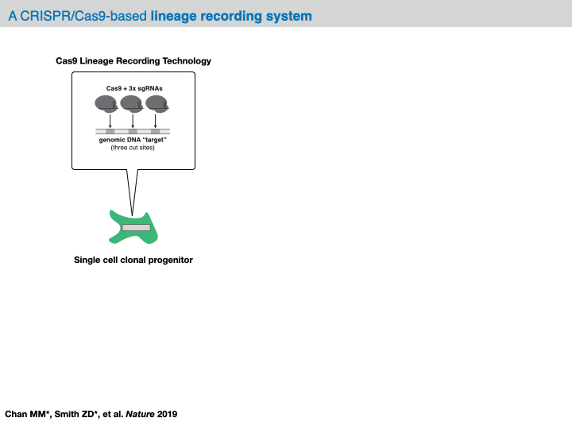

15. Lineage tracing#
15.1. Key takeaways#
Key takeaways
Remember, the resolution of experimental data is still limited. Statistical analysis and assessment of the quality of lineage information shall be performed in order to identify individuals for which lineage reconstruction can be applied. As demonstrated below there are dedicated tools which easily provide the relevant statistics.
Often it is difficult to presume which algorithm will perform best for reconstruction, and even algorithms with good performances might highlight different part of lineages. It is recommended that you apply a few algorithms for reconstruction for comparisons.
As with any analysis without a certain ground truth, any conclusions must be carefully drawn. First and foremost, it is always good practice to visualize lineages along with the indel heatmap to verify that no obvious reconstruction errors were made (see the section entitled “Reconstructing the lineage” for more tips on how to evaluate reconstruction accuracy by eye). Additionally, an effective strategy for drawing stronger conclusions is to compare downstream analyses on the same lineage inferred with different algorithms. Of course, as with most matters concerning computational conclusions, we often suggest that conclusions are validated in an experimental system.
Environment setup
Install conda:
Before creating the environment, ensure that conda is installed on your system.
Save the yml content:
Copy the content from the yml tab into a file named
environment.yml.
Create the environment:
Open a terminal or command prompt.
Run the following command:
conda env create -f environment.yml
Activate the environment:
After the environment is created, activate it using:
conda activate <environment_name>
Replace
<environment_name>with the name specified in theenvironment.ymlfile. In the yml file it will look like this:name: <environment_name>
Verify the installation:
Check that the environment was created successfully by running:
conda env list
name: lineage-tracing
channels:
- defaults
- conda-forge
dependencies:
- conda-forge::python=3.12.9
- pip:
- git+https://github.com/YosefLab/Cassiopeia@master#egg=cassiopeia-lineage
- scanpy==1.11.0
- session_info
- lamindb[bionty,jupyter]
TL;DR we provide a brief overview assays providing measurements of both cell state and lineage history and on the available computational pipelines using a leading example, tracing tumor development in a mouse model of lung cancer.
15.2. Motivation#
Cellular lineages are ubiquitous in biology. Perhaps the most famous example is that of embyrogenesis: the process by which an organism like a human being is generated from from a single cell, the fertilized egg. During this process, subsequent cell divisions give rise to daughter cells and over time entire “lineages” that take on specialized roles within the developing embryo. The amazing complexity of this process has captured the imagination of scientists for centuries, and over the past century and a half our understanding of this process has been bolstered by the development of high-throughput sequencing assays and new “lineage tracing” technologies for visualizing and characterizing this process [Woodworth et al., 2017]. Amongst the most exciting of these methods allow investigators to link measurements of cell state with models of their history, thus providing a window into how differentiation trajectories might have unfolded.
The marriage of single-cell assays and lineage tracing approaches has yielded an exponential growth in the complexity of datasets, requiring the development of new computational methodology for their analysis. As such, there has been a strong need in developing new computational methodology for processing these datasets [Gong et al., 2021]. Sourcing heavily from population genetics literature, the past half decade has witnessed an exciting confluence of traditional concepts in evolutionary biology with cutting-edge genome engineering techniques.
In this chapter, we provide a brief overview of these new technologies and focus on the available computational pipelines for the analysis of their output and extraction of biological insight. To note, we pay special focus with our example to the CRISPR/Cas9-based “evolving” lineage tracing setting. For a more complete view of other useful experimental alternatives, we refer the interested reader to the excellent reviews by McKenna & Gagnon [McKenna and Gagnon, 2019], Wagner & Klein [Wagner and Klein, 2020], and VanHorn & Morris [VanHorn and Morris, 2021].
15.3. Lineage tracing technologies#
The goal of lineage tracing techniques is to infer lineage, or ancestry relationships between observed cells. In this, there are two major variables to consider: scale and resolution. Classical approaches relied heavily on visual observation: for example, in the 1970s Sulston and colleagues derived the first developmental lineage of the nematode C. elegans by meticulously watching cell divisions under a microscope [Sulston et al., 1983]. While playing an imperative role in the progression of the field, such approaches cannot scale to complex organisms with more stochastic developmental lineages.
Over the past two decades, the development of revolutionary sequencing assays and microfluidic devices has contributed to the development of new and diverse lineage tracing methodology [Wagner and Klein, 2020]. To digest the plethora of techniques, it is helpful to classify approaches as “prospective” or “retrospective”:
Prospective lineage tracing approaches enable investigators to trace the descendants of a single cell (i.e., a “clone” or “clonal population”). Typically, this is done by introducing a heritable marker into a cell (termed a “clonal progenitor”) that is passed on from generation to generation.
Retrospective lineage tracing approaches use variability observed in cells - such as naturally occurring genetic mutations - to infer a model of their lineage (or “phylogeny”) summarizing the cell division history in a clonal population.
Several approaches have been developed for prospectively tracing a clonal population: for example, recombinases under a tissue-specific promoter can be used to activate fluorescent markers that act as heritable marks for a specific tissue lineage [Weissman and Pan, 2015], [Nagy, 2000], [Liu et al., 2020], [Liu et al., 2020], [He et al., 2017]. Alternatively, lentiviral transduction can be used to integrate random DNA barcodes into cellular genomes to provide a heritable mark that can be used to deconvolve clonal identities with a sequencing readout [Gerrits et al., 2010], [Biddy et al., 2018], [Weinreb et al., 2020], [Yao et al., 2017]. Though these approaches are highly scalable and often do not require heavy genome engineering, they can only report properties at the clonal-level such as clone size and composition.
Retrospective lineage tracers overcome these limitations and provide an additional advantage over prospective tracers by reporting properties about the subclonal dynamics of clones. Traditionally, this has been done by leveraging natural variation between cells to reconstruct a cell division history, such as single-nucleotide variation [Vogelstein et al., 2013], [Turajlic and Swanton, 2016], [Bailey et al., 2021], [Gerstung et al., 2020], [Abyzov and Vaccarino, 2020], [Bizzotto et al., 2021], [Ju et al., 2017] or copy-number-variation [Patel et al., 2014], [Gao et al., 2021]. While this approach is still widely and successfully used to study human tumors or tissue developmental histories, experimentalists have little or no control over how often or where mutations occur. In experimental models, there are opportunities to recapitulate the advantages of retrospective tracers while improving on the caveats by engineering evolvable lineage tracers. Such evolving tracers typically consist of engineering cells with a “scratchpad” (or, synonymously, “target site”) that can acquire mutations [Wagner and Klein, 2020], [McKenna and Gagnon, 2019]. For example, a popular approach that this chapter focuses on uses Cas9 to introduce insertions and deletions (i.e., “indels”) at the target site [McKenna et al., 2016], [Spanjaard et al., 2018], [Chan et al., 2019], [Frieda et al., 2017], [Kalhor et al., 2018], [Alemany et al., 2018]. In this way, cellular lineages acquire heritable mutations over time that can be subsequently read out with high-throughput sequencing platforms and used to infer phylogenies representing a model of the cell lineage. Building on this work, additional technologies have emerged that improve the interpretability of this data: for example, approaches like peCHYRON [Loveless et al., 2021] and DNA Typewriter [Choi et al., 2022] introduce ordered, sequential edits to allow for more confident assessment of lineage histories.
Both classes of lineage-tracing approaches can take advantage of adjacent advances in single-cell multiomic profiling. For example, investigators have routinely used single-cell RNA-seq (scRNA-seq) to read out simultaneously the functional state of single cells and their lineage relationships [Raj et al., 2018], [Chan et al., 2019], [Weinreb et al., 2020], [Wagner and Klein, 2020], [Spanjaard et al., 2018]. This multimodal readout has created opportunities for new computational methodologies, which we detail below.
As stated above, in this chapter we provide a detailed walkthrough on the analysis of data from evolving CRISPR/Cas9-based lineage tracers.
We've used a few terms above that can be confusing to first-time readers. Briefly, we offer some definitions before moving on:
- clonal population (or, clone): The full set of descendants of a specific cell progenitor.
- clonal progenitor: The original single-cell giving rise to a clonal population.
- subclonal resolution: Insights into the relationships between subsets of cells within a clonal population.
- phylogeny: A model of the cell division history of a clonal population, represented as a tree.
- scratchpad (or, target site): A synthetic, exogeneous region capable of accumulating targeted variation in evolving lineage tracing technologies.
15.4. Overview of evolving lineage tracing data analysis pipelines#
Before delving into the analysis of our example dataset, we will provide an overview of the computational pipeline for the analysis of data generated by evolving tracers (based on [Jones et al., 2020]). In general, with these systems, analysis will begin with raw sequencing data of an amplicon library of target sites (often derived from a conventional scRNA-seq platform like 10X Chromium). Depending on the technology at hand, each sequenced amplicon will be between 150-300bp long; in the case of CRISPR/Cas9-based evolving tracers, each read will contain one more Cas9 cut sites. Within the preprocessing of this data, analysts are tasked with aligning the reads to a reference sequence and identifying any mutations (e.g., indels).
While the preprocessing of these datasets is a critical step, in the interest of space, we focus on analysis pipelines that receive preprocessed sequencing data as input and refer the reader to an external preprocessing tutorial which can be found here.

In most analysis frameworks, the preprocessing of the raw sequencing reads produces a data structure called the character matrix that summarizes the observed mutations in each cell across the target sites. In this data structure, each row is a cell (or “sample”), each column is a target site (or “character”), and the (row, column) values are categorical variables representing the identity of the indel observed in that cell at that particular cut site (or “character-state”). Depending on the technology at hand, these character matrices can report on anywhere between 100 and 10,000 samples across up to 100 characters.
At this point, this data structure abstracts away the technicalities of the evolving lineage tracing assay and opens up the opportunity to computationally infer a phylogenetic tree over the cells. Specifically, the goal is to learn a hierarchical tree structure over each of the cells in our character matrix. In this tree, each node represents a sample and each edge represents a lineage relationship. Importantly, we often have only observed the leaves of the tree and we refer to any of the unobserved set of internal nodes as ancestral nodes. (To note, we tend to use the term “phylogenetic tree” loosely as this has a precise definition. In reality, we often infer a cladogram summarizing the relationships between cells.)
There are many algorithmic choices for inferring the phylogenetic tree from the character matrix, which can be generally broken up into “character-based” and “distance-based” approaches:
Character-based: perform a combinatorial search through all possible tree topologies while seeking to optimize a function over the characters (e.g., the likelihood of the evolutionary history given the mutations observed in the characters).
Maximum Parsimony [Cavalli-Sforza and Edwards, 1963]: Find a tree with the minimum number of mutations.
Maximum Likelihood [Felsenstein, 1981]: Find a tree with the most likely mutation history (for a lineage tracing-specific algorithm, we refer the reader to GAPML[Feng et al., 2021]).
Bayesian Phylogenetic Inference [Huelsenbeck et al., 2001]: Find a tree that maximizes the posterior probability of the evolutionary history given observed mutations.
Distance-based: use a notion of cell-cell distances (such as the number of edits that they share, denoted by \(\delta\)) to infer a phylogenetic tree and typically run in polynomial time. While distance-based approaches can perform much faster, they require one to iteratively find the best cell-cell dissimilarity function which can be equally time consuming.
Neighbor-Joining [Saitou and Nei, 1987]: Produces a tree from a given cell-cell dissimilarity matrix by iteratively finding pairs that minimize a branch length according to specific criteria.
UPGMA [Sokal, 1958]: Produces a tree from a given cell-cell dissimilarity matrix using a faster algorithm than Neighbor-Joining. However, it has more strict requirements to produce an accurate tree.
Traditionally, the task of inferring phylogenies from this type of data is challenging and often requires the application of combinatorial algorithms with poor scalability. In applying such algorithms to the single-cell evolving lineage-tracers previously described, these problems become exacerbated as the number of cells sampled is routinely an order or magnitude larger than the number of species assessed in traditional phylogenetic studies. These challenges are further compounded with non-random missing data and non-uniform editing distributions. Fortunately, there have been recent algorithmic developments for addressing the modeling challenges for evolving lineage tracers [Jones et al., 2020], [Feng et al., 2021], [Gong et al., 2021] and for scaling inference to extremely large trees with deep distributed computing [Konno et al., 2022]. In practice, the majority of applications have used variants of maximum-parsimony approaches or distance-based approaches like Neighbor-Joining for their tree inference. However, this is currently an active area of development and for a more in-depth discussion, we refer the reader to the Conclusions.
Following phylogenetic tree reconstruction, there are several options for downstream analysis. For example, one can learn about the rates of cell state changes across the developmental history or the relative propensities of cells to divide in a population. Below, we will demonstrate via code examples how these different components fit together to gain fundamental insights into the dynamic processes underlying cellular lineages.
15.5. Cassiopeia for lineage tracing analysis#
In this tutorial, we will primarily make use of Cassiopeia, one of the few packages for lineage tracing analysis [Jones et al., 2020].
Generally, Cassiopeia is a software suite for processing and analyzing evolving lineage tracing sequencing data. The software contains four major modules:
preprocessing sequencing reads from evolving lineage tracing datasets (e.g., CRISPR/Cas9-based lineage tracers) into character matrices.
reconstructing phylogenies from these character matrices with one of several algorithms available in the codebase
providing analysis tools for deriving insights from reconstructed phylogenies.
simulating realistic phylogenies and lineage tracing data for benchmarking purposes
Though these modules fit together in the Cassiopeia pipeline, they are additionally independent of one another. For example, a user might use a different software suite for lineage inference but use tools in the Cassiopeia codebase for post-reconstruction analysis.
For more installation guidelines and additional documentation, we refer the reader here.
15.6. Tracing tumor development in a mouse model of lung cancer#
In this case study, we will make use of the recent study presented in [Yang et al., 2022]. Briefly, in this study the authors integrated a evolving CRISPR/Cas9-based lineage tracer into the KP mouse model of non-small-cell lung cancer [DuPage et al., 2009]. Specifically, this mouse model carries oncogenic Kras and Tp53 mutations that under native conditions are not expressed. However, upon the introduction of Cre recombinase via lentiviral inhalation, these oncogenic mutations are activated in single cells of the lung airway epithelium inducing tumors. In this study, the CRISPR/Cas9-based lineage tracer is under similar control and thus becomes active simultaneously upon tumor induction.
With this system, the authors followed tumors from their single-cell origins over the course of approximately 4.5-6 months at which point they harvested aggressive, metastatic tumors. After dissociation of the tumors, the authors profiled both the lineage tracing target sites and the RNA content of single cells. This resulted in a large dataset of more than 70,000 cells across more than 100 tumors with both lineage and scRNA-seq information.
In this tutorial, we will demonstrate how a user can take processed target site data to learn interesting dynamic properties of lineages. Throughout this case study, each lineage will correspond to a single primary tumor sampled from a mouse lung.
Before moving on, make sure you understand what data types we'll be utilizing. As discussed above, we are equipped with scRNA-seq count matrices and, separately, lineage tracing data (this can come in many forms; below, we begin with the allele table which summarizes the indels observed on each target within a cell. This is described more below). These two data will be processed separately. The lineage tracing data will be used to infer lineages, and the scRNA-seq data will be used to interpret interesting behaviors of these lineages.
For the dataset analyzed below, each cell is engineered with approximately 10 target sites, each of which carrying 3 Cas9 cut sites in tandem. Each target site is labeled with a unique integration barcode ("intBC" for short). All together, we can expect to observe 3*(# target sites) characters in each cell that can accumulate mutations and be used for lineage inference. For more information on the structure of the sequencing cassette, please refer to Chan, Smith et al. Molecular recording of mammalian embryogenesis. Nature 2019.
15.6.1. Downloading the data#
This data is publicly hosted on Zenodo and we can download the data as follows:
!wget "https://zenodo.org/record/5847462/files/KPTracer-Data.tar.gz?download=1"
--2022-06-30 10:28:22-- https://zenodo.org/record/5847462/files/KPTracer-Data.tar.gz?download=1
Resolving zenodo.org (zenodo.org)... 137.138.76.77
Connecting to zenodo.org (zenodo.org)|137.138.76.77|:443... connected.
HTTP request sent, awaiting response... 200 OK
Length: 1304975216 (1.2G) [application/octet-stream]
Saving to: ‘KPTracer-Data.tar.gz?download=1’
KPTracer-Data.tar.g 100%[===================>] 1.21G 1.49MB/s in 7m 3s
2022-06-30 10:35:27 (2.94 MB/s) - ‘KPTracer-Data.tar.gz?download=1’ saved [1304975216/1304975216]
!tar -xvzf KPTracer-Data.tar.gz?download=1
15.6.2. Environment setup.#
Before we enter this notebook’s analysis, let’s set up our environment.
import cassiopeia as cas
import matplotlib.pyplot as plt
import numpy as np
import pandas as pd
import scanpy as sc
from cassiopeia.preprocess import lineage_utils
15.6.3. Examine the data#
After preprocessing of the target site sequencing data, Cassiopeia uses an allele_table to summarize the mutations observed on each target site integration.
As described above, the system at hand should have approximately ~10 target sites per cell where each target site contains three Cas9 cut sites. Columns labeled intBC indicate the target site and columns labeled r* indicate the Cas9 cut sites on that target site. Mutations in each cut site are stored as CIGAR strings, indicating the size and type of indel observed.
Other metadata can also be stored in this table such as the total number of UMIs and reads associated with the target site molecule, which cell the molecule came from, and which tumor that cell belongs to.
allele_table = pd.read_csv(
"KPTracer-Data/KPTracer.alleleTable.FINAL.txt", sep="\t", index_col=0
)
allele_table.head(5)
/var/folders/kt/wk3kbll507v4h18f8nmbzkl80000gq/T/ipykernel_65366/3031588044.py:1: DtypeWarning: Columns (12) have mixed types. Specify dtype option on import or set low_memory=False.
allele_table = pd.read_csv("KPTracer-Data/KPTracer.alleleTable.FINAL.txt", sep='\t', index_col = 0)
| cellBC | intBC | r1 | r2 | r3 | allele | sampleID | UMI | readCount | Tumor | MetFamily | ES_clone | |
|---|---|---|---|---|---|---|---|---|---|---|---|---|
| 0 | L9.TTTGTCATCTGTCAAG-1 | TTCCCTATTTGCTA | CGCCG[111:2D]AAATG | GATAT[None]CTCTG | AATTC[220:1I]GGCGGA | CGCCG[111:2D]AAATGGATAT[None]CTCTGAATTC[220:1I... | L9 | 54 | 796 | 3724_NT_T1 | 3724_NT_T1 | 2E1 |
| 1 | L9.TTTGTCATCTGTCAAG-1 | TGTTTTTGTCTGCA | CGCCG[111:1I]AAAAAA | CATGT[151:19D]TGGTT | TTAAT[218:2D]GCGGA | CGCCG[111:1I]AAAAAACATGT[151:19D]TGGTTTTAAT[21... | L9 | 13 | 209 | 3724_NT_T1 | 3724_NT_T1 | 2E1 |
| 2 | L9.TTTGTCATCTGTCAAG-1 | TGTGAAGGTCAATA | CCGAA[113:49D]GATAT | CCGAA[113:49D]GATAT | AATTC[220:5D]GGACA | CCGAA[113:49D]GATATCCGAA[113:49D]GATATAATTC[22... | L9 | 68 | 1193 | 3724_NT_T1 | 3724_NT_T1 | 2E1 |
| 3 | L9.TTTGTCATCTGTCAAG-1 | TCAGGCGATGCGAA | CGCCG[111:1I]AAAAAA | CGATA[166:1I]TTCTCT | TAATT[219:2D]CGGAG | CGCCG[111:1I]AAAAAACGATA[166:1I]TTCTCTTAATT[21... | L9 | 43 | 745 | 3724_NT_T1 | 3724_NT_T1 | 2E1 |
| 4 | L9.TTTGTCATCTGTCAAG-1 | TATGATTAGTCGCG | CGCCG[111:1D]AAAAT | GATAT[167:54D]CGGAG | GATAT[167:54D]CGGAG | CGCCG[111:1D]AAAATGATAT[167:54D]CGGAGGATAT[167... | L9 | 27 | 530 | 3724_NT_T1 | 3724_NT_T1 | 2E1 |
We’ll focus on the data from KP tumors without any additional perturbations:
all_tumors = allele_table["Tumor"].unique()
primary_nt_tumors = [
tumor
for tumor in all_tumors
if "NT" in tumor and tumor.split("_")[2].startswith("T")
]
primary_nt_allele_table = allele_table[allele_table["Tumor"].isin(primary_nt_tumors)]
As described above, we expect to see around 10 unique intBCs (i.e., target sites) per tumor population. Below, we summarize some key statistics for the dataset.
15.6.3.1. Number of intBCs per Tumor#
One statistic of interest to analysts is the number of intBCs per tumor as this informs on the information capacity for each clonal population.
In recent applications ([Yang et al., 2022]), we find that high-quality clones typically have between 5 and 30 intBCs (corresponding to 15-90 characters). In plotting the number of intBCs per tumor, we can make sure there are not outliers tumors that we’d like to filter out before reconstruction.
primary_nt_allele_table.groupby(["Tumor"]).agg({"intBC": "nunique"}).plot(kind="bar")
plt.ylabel("Number of unique intBCs")
plt.title("Number of intBCs per Tumor")
plt.show()
As expected, we observe that the majority of tumors have around 10 intBCs while one tumor reports few observed intBCs and a few report more than 25 intBCs. Next we will discuss strategies for filtering out low-quality tumors.
15.6.3.2. Size of each tumor#
We are also interested in the size of the tumors that will be reconstructed. It’s typical to observe clones between 100 and 10,000 cells. Once again, we’ll want to make sure there are no clear outliers - specifically, clones that are too small for reconstruction (usually fewer than 100 cells).
primary_nt_allele_table.groupby(["Tumor"]).agg({"cellBC": "nunique"}).sort_values(
by="cellBC", ascending=False
).plot(kind="bar")
plt.yscale("log")
plt.ylabel("Number of cells (log)")
plt.title("Size of each tumor")
plt.show()
We see that we have one very large clone (with ~30,000 cells) and the rest of the clones are in the expected range, reporting between 1,000 and 5,000 cells.
15.6.4. Preparing the data for lineage reconstruction#
A general feature of Cas9-based tracers is that certain insertions and deletions are much more common than others. This can be an important modeling concern as high-probability edits can occur several times independently of one another and could potentially lead to an analyst incorrectly believing that two cells are related to one another.
Cassiopeia has a built-in utility for estimating the prior probabilities of insertions and deletions by counting the number of times that an indel appeared in unrelated tumors or intBCs.
In observing the frequencies of observed indels, we see that a few indels (small deletions or insertions) appear quite often in clones. On the other hand, we also observe several edits observed in a single clone. Because of the difference in frequencies, an analyst should try to incorporate these observed biases into downstream analyses.
indel_priors = cas.pp.compute_empirical_indel_priors(
allele_table, grouping_variables=["intBC", "MetFamily"]
)
indel_priors.sort_values(by="count", ascending=False).head()
| count | freq | |
|---|---|---|
| indel | ||
| TAATT[219:2D]CGGAG | 664.0 | 0.764977 |
| CGCCG[111:1I]AAAAAA | 584.0 | 0.672811 |
| CGCCG[111:1D]AAAAT | 504.0 | 0.580645 |
| CGCCG[111:2D]AAATG | 401.0 | 0.461982 |
| AATTC[220:3D]GAGGA | 395.0 | 0.455069 |
indel_priors.sort_values(by="count").head(5)
| count | freq | |
|---|---|---|
| indel | ||
| ATATC[168:49I]GTTGTGGCCCAACATGGCAGCGTGCCGTAGCTTAGTTGTCAGGCCATTTGCTGG | 1.0 | 0.001152 |
| ACGCC[110:2D]AGAAT | 1.0 | 0.001152 |
| CATCT[101:15D]TGGCC | 1.0 | 0.001152 |
| CCCGG[111:3D]ATTGG | 1.0 | 0.001152 |
| CCGAA[113:1I]GGAATG | 1.0 | 0.001152 |
15.6.4.1. Filtering out low-quality tumors#
Before tumor reconstruction, we’ll filter out tumors with (i) poor lineage tracing kinetics or (ii) that are too small to consider for analysis.
In previous publications ([Quinn et al., 2021] and [Yang et al., 2022]), we have found that looking at the following statistics are useful for determining the quality of the tumor:
percent unique: This is the percentage of lineage states that are unique in a tumor.
percent cut: This is the percentage of Cas9 targets that are mutated in a population of cells.
percent exhausted: This is the fraction of target sites that are identical across cells (i.e., are exhausted)
size of tumor: The number of cells in a tumor.
# utility functions for computing summary statistics
def compute_percent_indels(character_matrix):
"""Computes the percentage of sites carrying indels in a character matrix.
Args:
character_matrix: A pandas Dataframe summarizing the mutation status of each cell.
Returns:
A percentage of sites in cells that contain an edit.
"""
all_vals = character_matrix.values.ravel()
num_not_missing = len([n for n in all_vals if n != -1])
num_uncut = len([n for n in all_vals if n == 0])
return 1.0 - (num_uncut / num_not_missing)
def compute_percent_uncut(cell):
"""Computes the percentage of sites uncut in a cell.
Args:
A vector containing the edited sites for a particular cell.
Returns:
The number of sites uncut in a cell.
"""
uncut = 0
for i in cell:
if i == 0:
uncut += 1
return uncut / max(1, len([i for i in cell if i != -1]))
def summarize_tumor_quality(
allele_table,
minimum_intbc_thresh=0.2,
minimum_number_of_cells=2,
maximum_percent_uncut_in_cell=0.8,
allele_rep_thresh=0.98,
):
"""Compute QC statistics for each tumor.
Computes statistics for each clone that will be used for filtering tumors for downstream lineage reconstruction.
Args:
allele_table: A Cassipoeia allele table summarizing the indels on each molecule in each cell.
min_intbc_thresh: The minimum proportion of cells that an intBC must appear in to be considered
for downstream reconstruction.
minimum_number_of_cells: Minimum number of cells in a tumor to be processed in this QC pipeline.
maximum_percent_uncut_in_cell: The maximum percentage of sites allowed to be uncut in a cell. If
a cell exceeds this threshold, it is filtered out.
allele_rep_thresh: Maximum allele representation in a single cut site allowed. If a character has
less diversity than allowed, it is filtered out.
Returns:
A pandas Dataframe summarizing the quality-control information for each tumor.
"""
tumor_statistics = {}
NUMBER_OF_SITES_PER_INTBC = 3
# iterate through Tumors and compute summary statistics
for tumor_name, tumor_allele_table in allele_table.groupby("Tumor"):
if tumor_allele_table["cellBC"].nunique() < minimum_number_of_cells:
continue
tumor_allele_table = allele_table[allele_table["Tumor"] == tumor_name].copy()
tumor_allele_table["lineageGrp"] = tumor_allele_table["Tumor"].copy()
lineage_group = lineage_utils.filter_intbcs_final_lineages(
tumor_allele_table, min_intbc_thresh=minimum_intbc_thresh
)[0]
number_of_cutsites = (
len(lineage_group["intBC"].unique()) * NUMBER_OF_SITES_PER_INTBC
)
character_matrix, _, _ = cas.pp.convert_alleletable_to_character_matrix(
lineage_group, allele_rep_thresh=allele_rep_thresh
)
# We'll hit this if we filter out all characters with the specified allele_rep_thresh
if character_matrix.shape[1] == 0:
character_matrix, _, _ = cas.pp.convert_alleletable_to_character_matrix(
lineage_group, allele_rep_thresh=1.0
)
number_dropped_intbcs = number_of_cutsites - character_matrix.shape[1]
percent_uncut = character_matrix.apply(
lambda x: compute_percent_uncut(x.values), axis=1
)
# drop normal cells from lineage (cells without editing)
character_matrix_filtered = character_matrix[
percent_uncut < maximum_percent_uncut_in_cell
]
percent_unique = (
character_matrix_filtered.drop_duplicates().shape[0]
/ character_matrix_filtered.shape[0]
)
tumor_statistics[tumor_name] = (
percent_unique,
compute_percent_indels(character_matrix_filtered),
number_dropped_intbcs,
1.0 - (number_dropped_intbcs / number_of_cutsites),
character_matrix_filtered.shape[0],
)
tumor_clone_statistics = pd.DataFrame.from_dict(
tumor_statistics,
orient="index",
columns=[
"PercentUnique",
"CutRate",
"NumSaturatedTargets",
"PercentUnsaturatedTargets",
"NumCells",
],
)
return tumor_clone_statistics
15.6.4.2. Calculate and visualize tumors’ statistics#
tumor_clone_statistics = summarize_tumor_quality(primary_nt_allele_table)
NUM_CELLS_THRESH = 100
PERCENT_UNIQUE_THRESH = 0.05
PERCENT_UNSATURATED_TARGETS_THRESH = 0.2
low_qc = tumor_clone_statistics[
(tumor_clone_statistics["PercentUnique"] <= PERCENT_UNIQUE_THRESH)
| (
tumor_clone_statistics["PercentUnsaturatedTargets"]
<= PERCENT_UNSATURATED_TARGETS_THRESH
)
].index
small = tumor_clone_statistics[
(tumor_clone_statistics["NumCells"] < NUM_CELLS_THRESH)
].index
unfiltered = np.setdiff1d(tumor_clone_statistics.index, np.union1d(low_qc, small))
h = plt.figure(figsize=(6, 6))
plt.scatter(
tumor_clone_statistics.loc[unfiltered, "PercentUnsaturatedTargets"],
tumor_clone_statistics.loc[unfiltered, "PercentUnique"],
color="black",
)
plt.scatter(
tumor_clone_statistics.loc[low_qc, "PercentUnsaturatedTargets"],
tumor_clone_statistics.loc[low_qc, "PercentUnique"],
color="red",
label="Poor QC",
)
plt.scatter(
tumor_clone_statistics.loc[small, "PercentUnsaturatedTargets"],
tumor_clone_statistics.loc[small, "PercentUnique"],
color="orange",
label="Small lineages",
)
plt.axhline(y=PERCENT_UNIQUE_THRESH, color="red", alpha=0.5)
plt.axvline(x=PERCENT_UNSATURATED_TARGETS_THRESH, color="red", alpha=0.5)
plt.xlabel("Percent Unsaturated")
plt.ylabel("Percent Unique")
plt.title("Summary statistics for Tumor lineages")
plt.legend(loc="lower right")
plt.show()
This plot summarizes our quality-control filtering efforts. Each point corresponds to a tumor and its color indicates its filter status:
Tumors colored in red are filtered because either they have too few unique states or too few characters that can be used for reconstruction
Tumors colored in orange are filtered out because they are too small for reconstruction (we use a 100 cell filter)
Tumors in black have passed our quality-control filters and will be considered for reconstruction.
The tumor 3726_NT_T1 appears to be a lineage with satisfactory tracing data quality and we will reconstruct the tumor lineage using Cassiopeia.
15.6.4.3. Reconstruction of a selected tumor (3726_NT_T1)#
In order to reconstruct lineages, we’ll have to convert the allele table for a particular tumor into a “character matrix”. As defined above, these data structures summarize the mutations observed in each target site in each cell. By default, uncut sites are indicated as 0 and missing sites are indicated as -1. All other values in the matrix correspond to unique indels.
The tumor 3726_NT_T1 appears to be a lineage with satisfactory tracing data quality and we will reconstruct the tumor lineage using Cassiopeia.
tumor = "3726_NT_T1"
tumor_allele_table = primary_nt_allele_table[primary_nt_allele_table["Tumor"] == tumor]
n_cells = tumor_allele_table["cellBC"].nunique()
n_intbc = tumor_allele_table["intBC"].nunique()
print(
f"Tumor population {tumor} has {n_cells} cells and {n_intbc} intBCs ({n_intbc * 3} characters)."
)
Tumor population 3726_NT_T1 has 772 cells and 10 intBCs (30) characters.
(
character_matrix,
priors,
state_to_indel,
) = cas.pp.convert_alleletable_to_character_matrix(
tumor_allele_table, allele_rep_thresh=0.9, mutation_priors=indel_priors
)
character_matrix.head(5)
Dropping the following intBCs due to lack of diversity with threshold 0.9: ['ACTCTGCTCCAGATr2', 'ACTCTGCTCCAGATr3', 'GCCTACTTAAGTCCr1', 'GTTTATTTCCGTATr3', 'TATGATTAGTCGCGr1', 'TATGATTAGTCGCGr2', 'TGATATAAATCTTTr2', 'TTCCCTATTTGCTAr2', 'TGTTTTTGTCTGCAr1', 'ACAGGTGCTCAAATr1', 'ACAGGTGCTCAAATr2', 'ACAGGTGCTCAAATr3']
| r1 | r2 | r3 | r4 | r5 | r6 | r7 | r8 | r9 | r10 | r11 | r12 | r13 | r14 | r15 | r16 | r17 | r18 | |
|---|---|---|---|---|---|---|---|---|---|---|---|---|---|---|---|---|---|---|
| L6.TTTGTCACACATCCAA-1 | 1 | 1 | 1 | 1 | 1 | 1 | 1 | 1 | 1 | 1 | 1 | 1 | 1 | 1 | 1 | 1 | -1 | -1 |
| L6.TTTGGTTTCTGAGTGT-1 | 1 | 1 | 1 | 1 | 1 | 1 | 1 | 1 | 1 | 1 | 1 | 1 | 1 | 1 | 1 | 1 | 1 | 1 |
| L6.TTTGGTTCATGTAAGA-1 | 1 | 1 | 2 | 2 | 2 | 2 | 2 | 2 | 2 | 2 | 2 | 2 | 2 | 2 | 2 | 2 | 2 | 2 |
| L6.TTTGCGCAGCTCCTCT-1 | 1 | 2 | 3 | 3 | 3 | 3 | 1 | 3 | 3 | 3 | 1 | 1 | 3 | 3 | 3 | 3 | 3 | 0 |
| L6.TTTATGCTCGCCGTGA-1 | 1 | 1 | 1 | 1 | 1 | 1 | 1 | 1 | 1 | 1 | 1 | 1 | 1 | 1 | 1 | 1 | 4 | 0 |
15.6.5. Reconstructing the lineage#
There exist several algorithms for inferring phylogenies, many of which can be employed from the general character matrix format that Cassiopeia uses. Because of this, Cassiopeia has implemented several algorithms that can be used for lineage reconstruction, and many others can be implemented using the general CassiopeiaSolver API. Among the most popular algorithms are:
VanillaGreedy: A simple and efficient heuristic-based algorithm that can be good for a first-pass at your lineage reconstruction. Based on the landmark Gusfield algorithm [Gusfield, 1991] and described in [Jones et al., 2020].
Neighbor-Joining: A classic distance-based algorithm, as described in [Saitou and Nei, 1987].
UPGMA: An efficient distance-based algorithm that has special assumptions about how the samples are related to one another. Originally described in [Sokal, 1958].
ILPSolver: An implementation of a Steiner-Tree optimization inference algorithm, as described in [Jones et al., 2020]. This algorithm is slow (and will often not scale beyond around 1.5k cells) but precise.
HybridSolver: A divide-and-conquer hybrid algorithm that uses a Greedy top-down algorithm to divide the data with a precise algorithm to conquer the subproblems (i.e., the ILPSolver). Described in [Jones et al., 2020].
For the tutorial at hand, we will proceed with the VanillaGreedySolver. Additional solvers from the Cassiopeia codebase can be plugged in as alternatives.
To set up inference, we’ll instantiate a CassiopeiaTree which is a Cassiopeia-specific data structure for storing the character matrix and lineage meta data, as well as providing specific utilities for tree manipulation. We’ll also instantiate a VanillaGreedySolver which will populate the tree field in the CassiopeiaTree object.
Having so many algorithms at your disposal, it might seem daunting to choose the "right" one. For this reason, we often suggest that a user perform inference with a few algorithms for comparison. In addition to this, users will want to consider the size of their dataset and prior benchmarking studies as criteria for selecting the algorithms to use. As a rule of thumb, prior experience has found that the HybridSolver is a good balance between scalability and precision, and Neighbor-Joining is a convenient alternative for comparison (Neighbor-Joining also has the advantage of being a different class of algorithm [distance-based versus character-based], so it might highlight different parts of the lineage). For the tutorial purposes here, we will proceed with the GreedySolver as it is extremely efficient and often can serve as a good first-pass of the data before applying more precise (but slower) algorithms.
tree = cas.data.CassiopeiaTree(character_matrix=character_matrix, priors=priors)
greedy_solver = cas.solver.VanillaGreedySolver()
Running greedy_solver.solve will perform tree inference and populate the tree field in the CassiopeiaTree object.
After inference, we can take advantage of the Cassiopeia visualization library to study the resulting tree structure. We’ll observe that there are some mistakes in the inference, but overall large groups of cells seem to be correctly placed. As described above, this can be a nice first-pass of the data before more time-consuming and sophisticated algorithms are deployed.
greedy_solver.solve(tree)
cas.pl.plot_matplotlib(tree, orient="right", allele_table=tumor_allele_table)
100%|██████████████████████████████████████████████████████████████████████████████████████████████████████████████████████████████████████████████████████████████████████████████████████████████████████████████████████████████████████████████| 30/30 [00:11<00:00, 2.71it/s]
(<Figure size 504x504 with 1 Axes>, <AxesSubplot:>)
This representation of the reconstruction can be very useful for assessing algorithmic performance. Assessing the performance of these reconstructions can be quite difficult, but becomes easier with practice. A good tip for starting to assess the performance is to select a column and see if a given indel appears more than once in separate groups of unrelated cells. This might indicate an algorithmic error.
As one can see, the majority of cells (rows in the heatmap) are in neighborhoods of cells with similar edit states. One consequence of this is that there are specific indels in cut sites that are grouped together cleanly (e.g., the pink allele in the 4th column from the left). We can also be confident in the reconstruction if several alleles group cells together – for example, the pink allele in the 4th column, the light-purple allele in the 6th column, and so forth.
There are a few mistakes that can be gleaned from this reconstruction, however. For example, in the fourth column two groups of cells are separated that both share a purple allele. There are other alleles in the heatmap that argue that these should be grouped together, indicating that this is an algorithmic error.
As we discussed above, since there are several algorithmic options available to an analyst, it can often be useful to apply a few algorithms for comparison.
15.6.6. Quantifying dynamic properties from the tree#
From the tree structure learning properties about the population would be of biological interest. Some common properties would be:
The timing and location of “expansion” events (i.e., the emergence of a population that can outgrow their neighbors)
The fitness (i.e., relative growth rate) of individual cells
The number of cell state changes in a population (i.e., plasticity)
Common differentiation programs in a population of cells
There exist several other downstream analytical tasks, and this is growing area of research.
Below we provide examples of how Cassiopeia can be used to infer some of these parameters.
15.6.7. Inferring expansion events#
We’ll use the compute_expansion_pvalues to compute the probability that a certain internal node in the tree gave rise to a faster-growing population. This procedure, introduced in [Yang et al., 2022], performs a depth-first-search over the tree and annotates each internal node with a probability that the number of descendants would have been generated under a neutral model of evolution. The procedure takes in a few hyperparameters of interest:
min_clade_size: The minimum size of a clade (i.e., number of leaves below an internal node) for consideration. It is often the case that clades that are too uninformative.min_depth: The minimum depth for an expansion to start. Amin_depthof 0 indicates that the root could be considered as expanding; a more reasonable depth would be 1 (one level below the root).
From this procedure, we can sift through the nodes and highlight where expansions are occurring. For example, in [Yang et al., 2022], the authors present a strategy for highlighting the most important expansion event. Below, we highlight an interesting expansion event in red.
cas.tl.compute_expansion_pvalues(tree, min_clade_size=(0.15 * tree.n_cell), min_depth=1)
# this specifies a p-value for identifying expansions unlikely to have occurred
# in a neutral model of evolution
probability_threshold = 0.01
expanding_nodes = []
for node in tree.depth_first_traverse_nodes():
if tree.get_attribute(node, "expansion_pvalue") < probability_threshold:
expanding_nodes.append(node)
cas.pl.plot_matplotlib(tree, clade_colors={expanding_nodes[6]: "red"})
(<Figure size 504x504 with 1 Axes>, <AxesSubplot:>)
In highlighting where expansions occurred, we can partition the tree into groups of more- and less-aggressive subpopulations. We highlight in red one such population that is likely more aggressive as it is a detected expansion.
In the original study, the authors found that distinct transcriptional patterns are associated with expanding regions that likely confer a fitness advantage.
15.6.7.1. Inferring tree plasticity#
Tumors from this model consist of cells from various transcriptional states. The heterogeneity of this dataset can be observed on a low-dimensional projection of this dataset, such as those computed with UMAP:
kptracer_adata = sc.read_h5ad("KPTracer-Data/expression/adata_processed.nt.h5ad")
sc.pl.umap(
kptracer_adata,
color="Cluster-Name",
show=False,
title="Cluster Annotations, full dataset",
)
plt.show()
# plot only tumor of interest
fig = plt.figure(figsize=(10, 6))
ax = plt.gca()
sc.pl.umap(kptracer_adata[tree.leaves, :], color="Cluster-Name", show=False, ax=ax)
sc.pl.umap(
kptracer_adata[np.setdiff1d(kptracer_adata.obs_names, tree.leaves), :],
show=False,
ax=ax,
title=f"Cluster Annotations, {tumor}",
)
plt.show()
The visualization of single-cell transcriptome clusters on the UMAP reveals a continuum of cellular states that can populate a tumor. As the authors had expected, these states had been described in previous work which suggested that the CRISPR/Cas9-based recording did not noticeably perturb tumor development.
We can also just subset to the cells that are in our tumor of interest and observe that even in this single tumor, cells occupy disparate transcriptional states.
Separately, we can overlay the cellular state assignments onto the hierarchical structure of the tree and evaluate the heritability of cellular states. In visualizing, we can see that certain parts of the lineage are more mixed than others.
tree.cell_meta = pd.DataFrame(
kptracer_adata.obs.loc[tree.leaves, "Cluster-Name"].astype(str)
)
cas.pl.plot_matplotlib(tree, meta_data=["Cluster-Name"])
(<Figure size 504x504 with 1 Axes>, <AxesSubplot:>)
In the visualization above, the color bar on the outside of the tree represents the cluster annotation of each cell. If states were very stable across generations, we’d expect to see strong coherence of state assignments between adjacent cells. However, above, we see that cells often are in a different state than their closest neighbor (especially on the right-hand side of the phylogeny).
The instability of these cellular states has been referred to as “effective plasticity” and several algorithms can be used to quantify it. One approach is to use the Fitch-Hartigan maximum-parsimony algorithm to infer the minimum number of times that cellular states had to have changed to give rise to the observed pattern. This function is implemented in Cassiopeia and can be utilized as below:
parsimony = cas.tl.score_small_parsimony(tree, meta_item="Cluster-Name")
plasticity = parsimony / len(tree.nodes)
print(f"Observed effective plasticity score of {plasticity}.")
Observed effective plasticity score of 0.2356902356902357.
This effective plasticity score is a score between 0 and 1 indicating how mixed the lineage is overall. A score of 0 would indicate no mixture at all and 1 would indicate that every cell has a different state than its sisters.
Often, we are more concerned with single-cell measurements of effective plasticity. We can compute a single-cell plasticity score as below:
# compute plasticities for each node in the tree
for node in tree.depth_first_traverse_nodes():
effective_plasticity = cas.tl.score_small_parsimony(
tree, meta_item="Cluster-Name", root=node
)
size_of_subtree = len(tree.leaves_in_subtree(node))
tree.set_attribute(
node, "effective_plasticity", effective_plasticity / size_of_subtree
)
tree.cell_meta["scPlasticity"] = 0
for leaf in tree.leaves:
plasticities = []
parent = tree.parent(leaf)
while True:
plasticities.append(tree.get_attribute(parent, "effective_plasticity"))
if parent == tree.root:
break
parent = tree.parent(parent)
tree.cell_meta.loc[leaf, "scPlasticity"] = np.mean(plasticities)
cas.pl.plot_matplotlib(tree, meta_data=["scPlasticity"])
kptracer_adata.obs["scPlasticity"] = np.nan
kptracer_adata.obs.loc[tree.leaves, "scPlasticity"] = tree.cell_meta["scPlasticity"]
# plot only tumor of interest
fig = plt.figure(figsize=(10, 6))
ax = plt.gca()
sc.pl.umap(kptracer_adata[tree.leaves, :], color="scPlasticity", show=False, ax=ax)
sc.pl.umap(
kptracer_adata[np.setdiff1d(kptracer_adata.obs_names, tree.leaves), :],
show=False,
ax=ax,
)
plt.title(f"Single-cell Effective Plasticity, {tumor}")
plt.show()
In comparing the patterns of inferred effective plasticity on the tree and the low-dimensional visualization, we can observe that as expected regions with more mixing between transcriptional states have higher effective plasticity. We can also observe that the effective plasticity appears to be enriched in “mid-stage” clusters like the “AT1-like” and “High-Plasticity” states.
For additional discussion into these patterns, we refer the reader to the original study [Yang et al., 2022].
15.7. Conclusions#
In this chapter we have provided an overview of lineage tracing technologies and presented a case study for CRISPR/Cas9-based lineage tracing analysis using a recent dataset. Here, in closing, we point to additional resources for lineage tracing analysis and tool development as well as highlight the key takeaways for new users.
As this is an emerging field we expect to see a rise in the number of large-scale time-series lineage traced datasets which and that novel computational tools tailored for the analysis of this data will be developed, [Rodriguez-Fraticelli and Morris, 2022] and [Mukhopadhyay, 2022]. We anticipate that the main focus will be put into methods which integrate gene-expression with lineage information hence providing a more complete biological picture of individuals. Further, following the new-directions detailed below we expect that methods will focus on trajectory inference from time series data.
15.8. New directions#
15.8.1. New phylogenetic inference algorithms#
In terms of new lineage inference algorithms, there are many promising directions:
Scalable bayesian inference: Mirroring the trends of more traditional phylogenetic algorithms, one potential direction is that of scaling Bayesian approaches to larger inputs. While most Bayesian algorithms have leveraged Markov chain Monte Carlo (MCMC) to estimate the posterior distribution [Huelsenbeck et al., 2001], advances in variational inference would greatly improve the scalability of Bayesian algorithms [Zhang and Matsen IV, 2018]. The probabilistic nature of such an advance would support high-throughput uncertainty estimation of the tree as well as fit naturally with other single-cell transcriptomic Bayesian approaches, like scVI [Lopez et al., 2018].
Improved distance-based algorithms: A fundamental aspect of distance-based algorithms is the estimation of dissimilarities between samples based on their mutation data and known properties of the dataset. With this in mind, a promising direction is that of developing more statistically robust and consistent dissimilarity functions for evolving lineage tracers by taking into account properites of how mutations arise and the priors on the likelihoods of specific mutations. Already, this has proven successful with DCLEAR [Gong et al., 2021] and [Fang et al., 2022]. Continuing advances in this realm would be greatly enabling as distance-based algorithms can run in polynomial time and produce very accurate trees with an adequate dissimilarity function.
15.8.2. Computational tools to interpret time-course lineage tracing data#
The increasing complexity of lineage tracing studies which include time-course information must be accompanied by computational methods which extend the analysis beyond the construction of phylogenetic trees. That is, methods that integrate multi-omics measurements with lineage tracing and temporal information to enable recovery of programs governing cell state, differentiation and behavior [Mukhopadhyay, 2022].
As this field is at its beginning the number of available tools is still limited, yet it is worth highlighting leading approaches:
LineageOTfor evolving CRISPR/Cas9-based setting [Forrow and Schiebinger, 2021]: A general-purpose method for inferring developmental trajectories from scRNA-seq time courses equipped with lineage information each time point applicable for evolving CRISPR/Cas9-based setting. The method was suggested as an extension of the Waddington OT [Schiebinger et al., 2019] algorithm to take the lineage relationships into account when mapping cells from earlier to later time-points. When computing transition matrices across pairs of time-points, LineageOT corrects expression profiles in the later time-point based on their lineage similarity. This method has been successfully applied for the reconstruction of time-course of C. elegans development. Further, through simulation it was proven thatLineageOTcan accurately recover complex trajectory structures that are impossible to recover from measurements of cell state alone. For more details and tutorials we refer the reader to https://lineageot.readthedocs.io.CoSparfor static barcoding lineage tracing data [Wang et al., 2022]: A computational approach to infer cell dynamics from single-cell transcriptomics integrated with static barcoding lineage tracing data. The method relies on two basic assumptions on the nature of biological dynamics: (i) cells in similar states behave similarly and (ii) cells limit their possible dynamics to give sparse transitions. The application ofCoSparis demonstrated on hematopoiesis, reprogramming and directed differentiation datasets. These examples show thatCoSparcan identify early fate biases not previously detected, predicting transcription factors and receptors implicated in fate choice. Documentation and detailed examples can be found at https://cospar.readthedocs.io/.
15.8.3. Resources for developing new computational methods#
While the current repertoire of analytical tools are quite powerful, there is a great opportunity for further development. To facilitate future efforts, we highlight a few tools for benchmarking algorithms:
The recent Allen Institute Lineage Reconstruction DREAM challenge [Gong et al., 2021] generated three benchmarking datasets that were used to evaluate new algorithms. Two of these datasets were synthetic (i.e., simulated) whereas one was generated with the intMEMOIR [Chow et al., 2021] technology. The recently published results offer insights into the behavior of successful algorithms as well as provides access to these benchmarking datasets [Gong et al., 2021].
Cassiopeia-benchmarkis a module within Cassiopeia that allows users to efficiently generate simulated lineage data for benchmarking new lineage reconstruction algorithms. While there is a strong focus on CRISPR/Cas9-based evolving tracer simulations, the general simulator API can be extended for additional technological considerations. The authors have provided a detailed walkthrough of using this benchmarking suite on their website.TedSimis a simulation framework for not only simulating barcoding data but also transcriptomic data on top of a lineage [Pan et al., 2022]. This simulation framework can be very useful for testing downstream analytical tools, such as those designed to infer developmental trajectories from lineage tracing data.
15.9. References#
Alexej Abyzov and Flora M Vaccarino. Cell lineage tracing and cellular diversity in humans. Annual Review of Genomics and Human Genetics, 21:101–116, 2020.
Anna Alemany, Maria Florescu, Chloé S Baron, Josi Peterson-Maduro, and Alexander Van Oudenaarden. Whole-organism clone tracing using single-cell sequencing. Nature, 556(7699):108–112, 2018.
Chris Bailey, James RM Black, James L Reading, Kevin Litchfield, Samra Turajlic, Nicholas McGranahan, Mariam Jamal-Hanjani, and Charles Swanton. Tracking cancer evolution through the disease course. Cancer discovery, 11(4):916–932, 2021.
Brent A Biddy, Wenjun Kong, Kenji Kamimoto, Chuner Guo, Sarah E Waye, Tao Sun, and Samantha A Morris. Single-cell mapping of lineage and identity in direct reprogramming. Nature, 564(7735):219–224, 2018.
Sara Bizzotto, Yanmei Dou, Javier Ganz, Ryan N Doan, Minseok Kwon, Craig L Bohrson, Sonia N Kim, Taejeong Bae, Alexej Abyzov, NIMH Brain Somatic Mosaicism Network†, and others. Landmarks of human embryonic development inscribed in somatic mutations. Science, 371(6535):1249–1253, 2021.
LL Cavalli-Sforza and AWF Edwards. The reconstruction of evolution. Ann. Hum. Genet, 27:105–106, 1963.
Michelle M Chan, Zachary D Smith, Stefanie Grosswendt, Helene Kretzmer, Thomas M Norman, Britt Adamson, Marco Jost, Jeffrey J Quinn, Dian Yang, Matthew G Jones, and others. Molecular recording of mammalian embryogenesis. Nature, 570(7759):77–82, 2019.
Junhong Choi, Wei Chen, Anna Minkina, Florence M. Chardon, Chase C. Suiter, Samuel G. Regalado, Silvia Domcke, Nobuhiko Hamazaki, Choli Lee, Beth Martin, Riza M. Daza, and Jay Shendure. A time-resolved, multi-symbol molecular recorder via sequential genome editing. Nature, 608(7921):98–107, Aug 2022. URL: https://doi.org/10.1038/s41586-022-04922-8, doi:10.1038/s41586-022-04922-8.
Ke-Huan K Chow, Mark W Budde, Alejandro A Granados, Maria Cabrera, Shinae Yoon, Soomin Cho, Ting-hao Huang, Noushin Koulena, Kirsten L Frieda, Long Cai, and others. Imaging cell lineage with a synthetic digital recording system. Science, 372(6538):eabb3099, 2021.
Michel DuPage, Alison L Dooley, and Tyler Jacks. Conditional mouse lung cancer models using adenoviral or lentiviral delivery of cre recombinase. Nature protocols, 4(7):1064–1072, 2009.
Weixiang Fang, Claire M Bell, Abel Sapirstein, Soichiro Asami, Kathleen Leeper, Donald J Zack, Hongkai Ji, and Reza Kalhor. Quantitative fate mapping: reconstructing progenitor field dynamics via retrospective lineage barcoding. bioRxiv, 2022.
Joseph Felsenstein. Evolutionary trees from term`dna` sequences: a maximum likelihood approach. Journal of molecular evolution, 17(6):368–376, 1981.
Jean Feng, William S DeWitt III, Aaron McKenna, Noah Simon, Amy D Willis, and Frederick A Matsen IV. Estimation of cell lineage trees by maximum-likelihood phylogenetics. The Annals of Applied Statistics, 15(1):343–362, 2021.
Aden Forrow and Geoffrey Schiebinger. Lineageot is a unified framework for lineage tracing and trajectory inference. Nature communications, 12(1):1–10, 2021.
Kirsten L Frieda, James M Linton, Sahand Hormoz, Joonhyuk Choi, Ke-Huan K Chow, Zakary S Singer, Mark W Budde, Michael B Elowitz, and Long Cai. Synthetic recording and in situ readout of lineage information in single cells. Nature, 541(7635):107–111, 2017.
Ruli Gao, Shanshan Bai, Ying C Henderson, Yiyun Lin, Aislyn Schalck, Yun Yan, Tapsi Kumar, Min Hu, Emi Sei, Alexander Davis, and others. Delineating copy number and clonal substructure in human tumors from single-cell transcriptomes. Nature biotechnology, 39(5):599–608, 2021.
Alice Gerrits, Brad Dykstra, Olga J Kalmykowa, Karin Klauke, Evgenia Verovskaya, Mathilde JC Broekhuis, Gerald de Haan, and Leonid V Bystrykh. Cellular barcoding tool for clonal analysis in the hematopoietic system. Blood, The Journal of the American Society of Hematology, 115(13):2610–2618, 2010.
Moritz Gerstung, Clemency Jolly, Ignaty Leshchiner, Stefan C Dentro, Santiago Gonzalez, Daniel Rosebrock, Thomas J Mitchell, Yulia Rubanova, Pavana Anur, Kaixian Yu, and others. The evolutionary history of 2,658 cancers. Nature, 578(7793):122–128, 2020.
Wuming Gong, Alejandro A Granados, Jingyuan Hu, Matthew G Jones, Ofir Raz, Irepan Salvador-Martínez, Hanrui Zhang, Ke-Huan K Chow, Il-Youp Kwak, Renata Retkute, and others. Benchmarked approaches for reconstruction of in vitro cell lineages and in silico models of c. elegans and m. musculus developmental trees. Cell systems, 12(8):810–826, 2021.
Dan Gusfield. Efficient algorithms for inferring evolutionary trees. Networks, 21(1):19–28, 1991.
Lingjuan He, Yan Li, Yi Li, Wenjuan Pu, Xiuzhen Huang, Xueying Tian, Yue Wang, Hui Zhang, Qiaozhen Liu, Libo Zhang, and others. Enhancing the precision of genetic lineage tracing using dual recombinases. Nature medicine, 23(12):1488–1498, 2017.
John P Huelsenbeck, Fredrik Ronquist, Rasmus Nielsen, and Jonathan P Bollback. Bayesian inference of phylogeny and its impact on evolutionary biology. science, 294(5550):2310–2314, 2001.
Matthew G Jones, Alex Khodaverdian, Jeffrey J Quinn, Michelle M Chan, Jeffrey A Hussmann, Robert Wang, Chenling Xu, Jonathan S Weissman, and Nir Yosef. Inference of single-cell phylogenies from lineage tracing data using cassiopeia. Genome biology, 21(1):1–27, 2020.
Young Seok Ju, Inigo Martincorena, Moritz Gerstung, Mia Petljak, Ludmil B Alexandrov, Raheleh Rahbari, David C Wedge, Helen R Davies, Manasa Ramakrishna, Anthony Fullam, and others. Somatic mutations reveal asymmetric cellular dynamics in the early human embryo. Nature, 543(7647):714–718, 2017.
Reza Kalhor, Kian Kalhor, Leo Mejia, Kathleen Leeper, Amanda Graveline, Prashant Mali, and George M Church. Developmental barcoding of whole mouse via homing crispr. Science, 361(6405):eaat9804, 2018.
Naoki Konno, Yusuke Kijima, Keito Watano, Soh Ishiguro, Keiichiro Ono, Mamoru Tanaka, Hideto Mori, Nanami Masuyama, Dexter Pratt, Trey Ideker, and others. Deep distributed computing to reconstruct extremely large lineage trees. Nature Biotechnology, 40(4):566–575, 2022.
Kuo Liu, Hengwei Jin, and Bin Zhou. Genetic lineage tracing with multiple term`dna` recombinases: a user's guide for conducting more precise cell fate mapping studies. Journal of Biological Chemistry, 295(19):6413–6424, 2020.
Kuo Liu, Muxue Tang, Hengwei Jin, Qiaozhen Liu, Lingjuan He, Huan Zhu, Xiuxiu Liu, Ximeng Han, Yan Li, Libo Zhang, and others. Triple-cell lineage tracing by a dual reporter on a single allele. Journal of Biological Chemistry, 295(3):690–700, 2020.
Romain Lopez, Jeffrey Regier, Michael B. Cole, Michael I. Jordan, and Nir Yosef. Deep generative modeling for single-cell transcriptomics. Nature Methods, 15(12):1053–1058, Dec 2018. URL: https://doi.org/10.1038/s41592-018-0229-2, doi:10.1038/s41592-018-0229-2.
Theresa B. Loveless, Joseph H. Grotts, Mason W. Schechter, Elmira Forouzmand, Courtney K. Carlson, Bijan S. Agahi, Guohao Liang, Michelle Ficht, Beide Liu, Xiaohui Xie, and Chang C. Liu. Lineage tracing and analog recording in mammalian cells by single-site term`dna` writing. Nature Chemical Biology, 17(6):739–747, Jun 2021. URL: https://doi.org/10.1038/s41589-021-00769-8, doi:10.1038/s41589-021-00769-8.
Aaron McKenna, Gregory M Findlay, James A Gagnon, Marshall S Horwitz, Alexander F Schier, and Jay Shendure. Whole-organism lineage tracing by combinatorial and cumulative genome editing. Science, 353(6298):aaf7907, 2016.
Aaron McKenna and James A Gagnon. Recording development with single cell dynamic lineage tracing. Development, 146(12):dev169730, 2019.
Andras Nagy. Cre recombinase: the universal reagent for genome tailoring. genesis, 26(2):99–109, 2000.
Xinhai Pan, Hechen Li, and Xiuwei Zhang. Tedsim: temporal dynamics simulation of single-cell term`rna` sequencing data and cell division history. Nucleic acids research, 50(8):4272–4288, 2022.
Anoop P Patel, Itay Tirosh, John J Trombetta, Alex K Shalek, Shawn M Gillespie, Hiroaki Wakimoto, Daniel P Cahill, Brian V Nahed, William T Curry, Robert L Martuza, and others. Single-cell rna-seq highlights intratumoral heterogeneity in primary glioblastoma. Science, 344(6190):1396–1401, 2014.
Jeffrey J Quinn, Matthew G Jones, Ross A Okimoto, Shigeki Nanjo, Michelle M Chan, Nir Yosef, Trever G Bivona, and Jonathan S Weissman. Single-cell lineages reveal the rates, routes, and drivers of metastasis in cancer xenografts. Science, 371(6532):eabc1944, 2021.
Bushra Raj, James A Gagnon, and Alexander F Schier. Large-scale reconstruction of cell lineages using single-cell readout of transcriptomes and crispr–cas9 barcodes by scgestalt. Nature protocols, 13(11):2685–2713, 2018.
Alejo Rodriguez-Fraticelli and Samantha A Morris. In preprints: the fast-paced field of single-cell lineage tracing. Development, 149(11):dev200877, 2022.
Naruya Saitou and Masatoshi Nei. The neighbor-joining method: a new method for reconstructing phylogenetic trees. Molecular biology and evolution, 4(4):406–425, 1987.
Geoffrey Schiebinger, Jian Shu, Marcin Tabaka, Brian Cleary, Vidya Subramanian, Aryeh Solomon, Joshua Gould, Siyan Liu, Stacie Lin, Peter Berube, and others. Optimal-transport analysis of single-cell gene expression identifies developmental trajectories in reprogramming. Cell, 176(4):928–943, 2019.
Robert R Sokal. A statistical method for evaluating systematic relationships. Univ. Kansas, Sci. Bull., 38:1409–1438, 1958.
Bastiaan Spanjaard, Bo Hu, Nina Mitic, Pedro Olivares-Chauvet, Sharan Janjuha, Nikolay Ninov, and Jan Philipp Junker. Simultaneous lineage tracing and cell-type identification using crispr–cas9-induced genetic scars. Nature biotechnology, 36(5):469–473, 2018.
John E Sulston, Einhard Schierenberg, John G White, and J Nichol Thomson. The embryonic cell lineage of the nematode caenorhabditis elegans. Developmental biology, 100(1):64–119, 1983.
Samra Turajlic and Charles Swanton. Metastasis as an evolutionary process. Science, 352(6282):169–175, 2016.
Sadie VanHorn and Samantha A Morris. Next-generation lineage tracing and fate mapping to interrogate development. Developmental cell, 56(1):7–21, 2021.
Bert Vogelstein, Nickolas Papadopoulos, Victor E Velculescu, Shibin Zhou, Luis A Diaz Jr, and Kenneth W Kinzler. Cancer genome landscapes. science, 339(6127):1546–1558, 2013.
Daniel E Wagner and Allon M Klein. Lineage tracing meets single-cell omics: opportunities and challenges. Nature Reviews Genetics, 21(7):410–427, 2020.
Shou-Wen Wang, Michael J Herriges, Kilian Hurley, Darrell N Kotton, and Allon M Klein. Cospar identifies early cell fate biases from single-cell transcriptomic and lineage information. Nature Biotechnology, pages 1–9, 2022.
Caleb Weinreb, Alejo Rodriguez-Fraticelli, Fernando D Camargo, and Allon M Klein. Lineage tracing on transcriptional landscapes links state to fate during differentiation. Science, 367(6479):eaaw3381, 2020.
Tamily A Weissman and Y Albert Pan. Brainbow: new resources and emerging biological applications for multicolor genetic labeling and analysis. Genetics, 199(2):293–306, 2015.
Mollie B Woodworth, Kelly M Girskis, and Christopher A Walsh. Building a lineage from single cells: genetic techniques for cell lineage tracking. Nature Reviews Genetics, 18(4):230–244, 2017.
Dian Yang, Matthew G Jones, Santiago Naranjo, William M Rideout III, Kyung Hoi Joseph Min, Raymond Ho, Wei Wu, Joseph M Replogle, Jennifer L Page, Jeffrey J Quinn, and others. Lineage tracing reveals the phylodynamics, plasticity, and paths of tumor evolution. Cell, 185(11):1905–1923, 2022.
Zizhen Yao, John K Mich, Sherman Ku, Vilas Menon, Anne-Rachel Krostag, Refugio A Martinez, Leon Furchtgott, Heather Mulholland, Susan Bort, Margaret A Fuqua, and others. A single-cell roadmap of lineage bifurcation in human esc models of embryonic brain development. Cell stem cell, 20(1):120–134, 2017.
Cheng Zhang and Frederick A Matsen IV. Variational bayesian phylogenetic inference. In International Conference on Learning Representations. 2018.
15.10. Contributors#
We gratefully acknowledge the contributions of:
15.10.2. Reviewers#
Aaron McKenna
Lukas Heumos